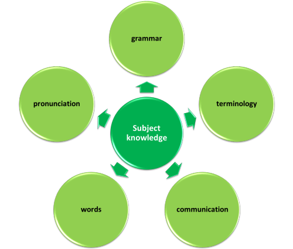
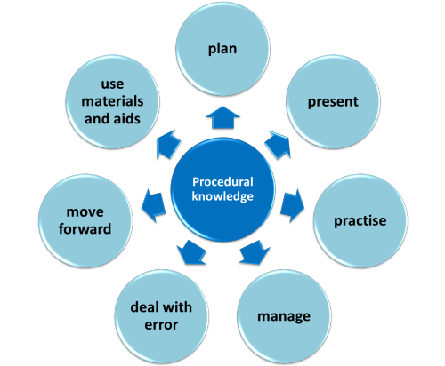

A basic ELT training course
In an ideal world, everyone would take a recognised initial
teacher training course, go on to work in a supportive and
professional environment and then take a more advanced course to
become a master practitioner.
However, you have probably noticed that the world is not ideal.
 |
The real world |
In the real world there are lots of people who need to
teach English to people with other first languages.
Some don't
have the money, the opportunity or the time to take a properly
recognised professional qualification. If that describes you,
and you are serious about being a good teacher, this is the page to
start your own training.
Warnings:This course is free but cannot
provide you with a recognised teaching qualification.
Unfortunately, there are also lots of online courses on the
web which are not free but which also cannot provide you
with a recognised
qualification. |
Copyright
You may not use this material for commercial purposes. The material may be used with fee-paying learners of English but may not be used on fee-paying courses for teachers. Small excerpts from materials, conventionally attributed, may be used on such courses but wholesale lifting of materials is explicitly forbidden. There is, of course, no objection at all to providing fee-paying course participants with annotated links to materials anywhere on this site. Indeed, that is welcomed.
This area of the site is a basic training course.
If you want some advice about how to get properly qualified
there is some here.
However, if you follow this course carefully and conscientiously, it
will give you some necessary background knowledge and a basic
toolbox of classroom techniques. You can build on that later.
You may like to read an introduction to English Language Teaching if
you are completely new to the area. Click
here to open that guide in a new tab.
 |
Two types of knowledge you need to have |
Nobody trusts a teacher who doesn't know her subject and nobody likes a teacher who can't explain, practise, demonstrate and even entertain from time to time. There are two types of knowledge that all teachers need:
- Subject knowledge: knowing about what you teach
- Procedural knowledge: knowing how to teach it
This course has sections covering both these areas.
 |
Subject knowledge |
Your subject is (or will be) English and you need to know
something about it. Make a few notes now about what you think
you have to know about the language to be a competent teacher.
Click here when you have done that.
- Grammar

- If you are a native speaker of English, the very word
grammar may strike fear into your heart.
In most English-speaking societies the study of the language and its forms comes low on the list of priorities at school. However, while you may not need to be able to state the rules of grammar or describe how words in the language work in order use it successfully, you need to be able to do both of those things in order to teach it successfully.
There is, in fact, nothing particularly terrifying or complicated about most English grammar (indeed, compared to many languages, it is deceptively simple). - Terminology
- Like every profession, English Language Teaching (ELT) has
its own vocabulary to describe teaching, learning and the forms
of English. Again, it's not a mysterious area and many of
the terms are transparent in meaning. You already know
terms like past, present, future, conditional, linking,
pronunciation, progressive, task, communicative, drill, elicit, voice, aspect, continuous,
hypothetical and so on. All you need to learn is how
the terms are used in ELT when we analyse things.
Sure, there are terms in the area you may not know (such as collocation, modal auxiliary verb, auxiliary, preposition, tag question, perfect aspect and so on) but your knowledge of these will grow as you investigate the areas you want to teach. It won't come all at once and it doesn't have to. - Communication

- For most purposes, learners want to learn how to do things in the language rather than be accurate in every respect and walking, talking dictionaries. As a teacher, therefore, you need to know about how language is used to communicate. The area is to do with function (another term you are already familiar with).
- Words

- Without grammar, you can't say much in a language but without words, you can't say anything at all. As a teacher, it is part of your job to help your learners understand and use the words they need to get what they want done in the language. Nobody will ever acquire all the words of any language and a learner will often struggle. This is where you come in. Knowing how words work together will help you help them.
- Pronunciation

- There's not much point in being able to speak a language if nobody can understand you. Equally, knowing how a language is pronounced helps you to understand what you hear. Part of being a teacher is to help in this respect and there are a few things you need to know about how English is pronounced.
 |
Procedural knowledge |
Procedural knowledge refers to the knowing what to do in a
classroom and with a learner or group of learners to help them
learn. Think of it as the teacher's toolbox. Again, it's not a mystery and we can break it
down. Before we do that, make a short list of some things you
think you need to know how to do in the classroom.
Think of what your best teachers did and the sorts of roles they
took on.
Click here when you have some notes.
- Plan
- All teachers of anything need to know how to put together a coherent lesson which isn't just a jumble of activities and tests. There's no mystery here, either. It's mostly a matter of common sense and the ability to put yourself in the learners' shoes.
- Present

- Clearly, if an area is new to your learners or you are extending what they know, you need to have a few techniques to hand to help you present information clearly in a way that people can understand.
- Practise
- Knowing something about language isn't enough. Your learners need to get real, solid practice in using the language in situations which are as realistic as possible. This is often the hard part but we'll come to some simple ideas soon.
- Manage the classroom

- Teachers are also managers so you need to think a bit about how you instruct, explain and group your learners. This is not a mystery. Most of us have, at times, managed other people.
- Deal with error

- All learners make mistakes. The trick is to learn from them. Helping learners to do that is very important.
- Move forward

- Teaching is a funny job because so often it's up to the
teacher to decide what to do next. Sure, you may have a
coursebook to help you and may work somewhere where there's a
clear syllabus (by no means invariably the case) but much of the
planning long-term will be up to you.
In most jobs, the work comes to you. You get on with it, finish it, return it and then get paid. Teachers make their own jobs. If you don't do anything, nothing happens. - Use materials and teaching aids

- Fortunately, you don't have to invent everything yourself.
There are excellent published materials in text form and a
wealth of resources on the web (including on this site).
Your job is to select appropriate ones and use them
intelligently. That's not too hard.
It's also true that we have (mostly) moved on from a blackboard and some chalk so, depending where you teach, there will be other resources available: DVDs, CDs, Interactive Whiteboards, data projectors, the web and so on. As always, the trick is selecting well and using them purposefully.
A summary of what you need to know
There are 12 areas here. Now you can design your own course to make you a teacher. It won't make you an expert but it will allow you to go into a classroom with confidence and, more importantly, it will help you help people to learn. There is nothing, nothing at all, so rewarding, by the way.
|  |  |
| Click on the area you want to learn about | Click on the area you want to learn about |
 |
Designing your own course |
- You can investigate the areas in any order you like (although one that seems logical to you is recommended). In the procedural section above, it makes sense to start with planning and move clockwise around the topics.
- You can take as long as you like over the activities and tests which come in each section
- You can return to them as often as you like to revise what you know
- Each section has links to other parts of this site to satisfy your hunger to know more
Enjoy your course.
 |
OK, I've done the course – what's the next step? |
There are lots of options (one of which is to get yourself
properly qualified by doing a recognised course).
Failing that, on this site you will find:
| Cambridge Teaching Knowledge Test | This is a complete, online course. TKT is a qualification recognised by Cambridge English. It is not a teaching certificate because there is no practical teaching element but there is an examination and it shows you are serious. |
| A language analysis course | This is a 10-unit course which will extend and consolidate what you have learned on this course. It covers phonology, morphology, lexis, tense, aspect, phrases, clauses, sentences and text structures. If you have never analysed language carefully, this is to be recommended for any initial training course you may take, such as CELTA (before, during and after a course). |
| A pre-initial training preparation guide | This is a guide (with lots of links to others) designed for people who are going to take either the Cambridge Assessment English CELTA course or the Trinity Certificate in TESOL course and want to hit the ground running with some of the key ideas and concepts already mastered. |
| The initial plus index | This is where you will find guides to background, methodology, pronunciation, language analysis and more. The guides are intended for people doing, are about to do or have recently done an initial training course such as Cambridge CELTA or the Trinity TESOL Certificate. |
| The in-service training section | If you find any area particularly interesting and you want to know more, there will frequently be more advanced guides in this index. Following the guides there conscientiously will put you on the road to becoming an expert. |
| Professional development | This is for anyone who wants to develop professionally in the field. You will find much there to entertain and educate. |
| An expert teacher | So you have a clear idea of where you are heading, you should also read the article explaining (or attempting to) what makes an expert in ELT. |
| A-Z index | This is a long index (which you can search using Ctrl + F) and may be of use to you if you are faced with teaching in an area you do not know much about. It opens in a new tab. |